- Sigma Points - Sampling from a Distribution
- A Quick Example
- Choosing Sigma Points
- The Unscented Transform
- The Unscented Kalman Filter
- Van der Merwe's Scaled Sigma Point Algorithm
- Using the UKF
- Tracking an Airplane
The Unscented Kalman Filter
충북대학교 지능로봇공학과 문성태 교수
Contents
- Effects of Sensor Error and Geometry
- Exercise: Explain Filter Performance
- Implementation of the UKF
- Batch Processing
- Smoothing the Results
- Choosing the Sigma Parameters
- Robot Localization - A Fully Worked Example
- Discussion
Nonlinear Systems
- 비선형 함수 f(x) = cos(4(x/2 + 0.7)) - 1.3x 에 N(0, 1) 표본 500,000 개를 통과시켜 히스토그램 작성
- 출력은 Gaussian 이 아닌 뾰족한 봉우리 모양, 출력의 평균과 표준편차로 근사 Gaussian 계산 가능
- 레이더 slant range 의 제곱근 계산, 공기 저항을 받는 공처럼 측정과 process 모두 비선형일 수 있음
- 조건: 입력 N(0, 1), 표본 500,000 개, 구간 300 개
from numpy.random import normal data = normal(loc=0., scale=1., size=500000) def f(x): return (np.cos(4*(x/2 + 0.7))) - 1.3*x plots.plot_nonlinear_func(data, f)
output mean=-0.126, std=1.554
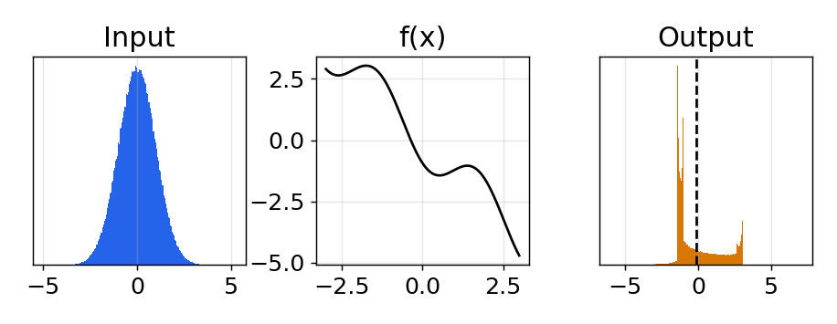
Input and Output Samples
- 같은 표본 중 30,000 개를 함수 통과 전과 후로 나눠 산점도로 표시
- 입력은 평균 0 주변에 흩어진 white noise, 출력은 두 개의 띠와 그 사이 점들이 있는 구조
- 띠 바깥에도 점이 흩어져 있고 음수 쪽에 훨씬 많음, 출력 분포는 Gaussian 이 아님
- 조건: 입력 N(0, 1), 표본 30,000 개, 세로축은 표본 번호
N = 30000 plt.subplot(121) plt.scatter(data[:N], range(N), alpha=.2, s=1) plt.title('Input') plt.subplot(122) plt.title('Output') plt.scatter(f(data[:N]), range(N), alpha=.2, s=1);
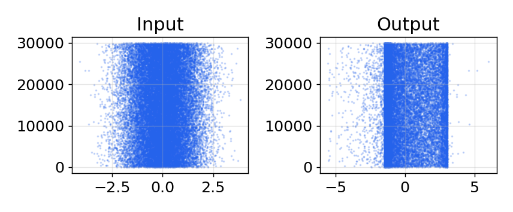
Monte Carlo Approach
- Monte Carlo: 매 갱신마다 많은 점을 비선형 함수에 통과시키고 결과의 평균과 분산 계산
- 사용 예: Ensemble filter, particle filter
- 장점: 특별한 지식, 닫힌 형태의 해 불필요, 점이 충분하면 어떤 함수에도 정확
- 문제: 500,000 개로도 출력이 매끄럽지 않음, 필요한 점 수는 차원의 거듭제곱으로 증가
- UKF: sigma point 를 결정론적으로 골라 계산량을 크게 줄임
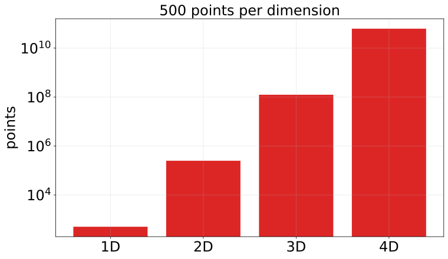
핵심: 무작위 표본은 차원이 늘수록 계산량이 폭발, 적은 수의 점을 잘 고르는 방법이 필요
Sigma Points - Sampling from a Distribution
- 2D 공분산 타원: 그리기 쉬워 2 차원으로 설명, 임의 차원으로 확장 가능
- 방법: 첫 공분산 타원에서 무작위 점을 뽑아 비선형 함수로 이동
- 추정: 이동한 점들의 평균과 공분산을 새 확률 분포의 추정으로 사용
- 그림: 왼쪽 1 sigma 타원과 표본 점, 오른쪽 반투명 타원은 이동한 점들의 추정
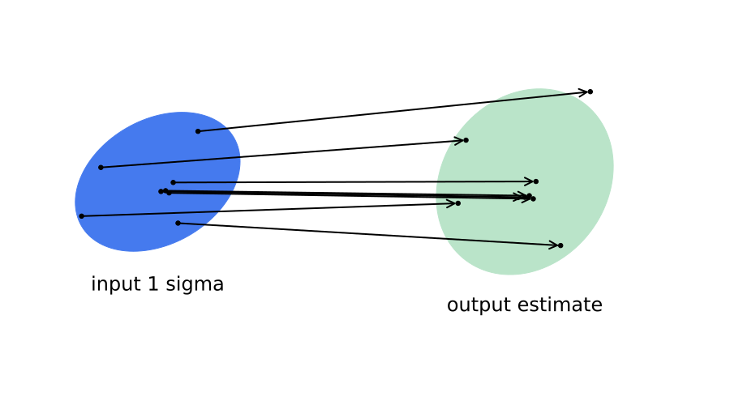
Linearized Mean
- N(0, [[32, 15], [15, 40]]) 에서 10,000 개 표본을 뽑아 비선형 함수 (x + y, 0.1x^2 + y^2) 에 통과
- 빨간 삼각형은 평균만 함수에 넣은 선형화 평균, 파란 별은 표본들로 계산한 실제 평균
- y 방향 차이가 40 이상, 한 점에서 선형화하는 방식은 큰 오차를 만든다는 증거
- 조건: 평균 (0, 0), 공분산 [[32, 15], [15, 40]], 표본 10,000 개
from numpy.random import multivariate_normal def f_nonlinear_xy(x, y): return np.array([x + y, .1*x**2 + y*y]) mean = (0., 0.) p = np.array([[32., 15.], [15., 40.]]) # Compute linearized mean mean_fx = f_nonlinear_xy(*mean) #generate random points xs, ys = multivariate_normal(mean=mean, cov=p, size=10000).T plots.plot_monte_carlo_mean(xs, ys, f_nonlinear_xy, mean_fx, 'Linearized Mean');
Difference in mean x=-0.004, y=41.690
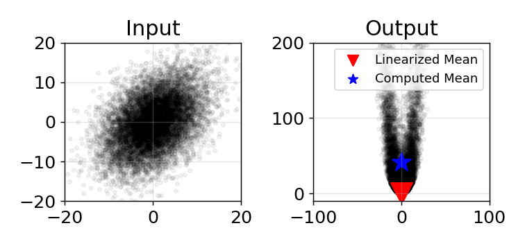
Julier Sigma Points
- sigma point 를 만드는 여러 알고리즘 중 하나인 JulierSigmaPoints 로 2 차원 sigma point 생성
- 점의 크기는 가중치, 평균 (3, 17) 주변의 5 개 점이 500,000 개 무작위 점만큼 또는 그 이상으로 동작
- 조건: n = 2, kappa = 1, 평균 (3, 17), 공분산 [[1, 0.5], [0.5, 3]], 녹색 타원은 1, 2 sigma
from filterpy.kalman import JulierSigmaPoints sigmas = JulierSigmaPoints(n=2, kappa=1) plots.plot_sigmas(sigmas, x=[3, 17], cov=[[1, .5], [.5, 3]])
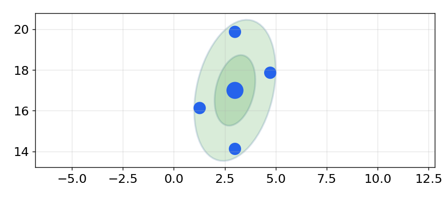
A Quick Example
- 상태 [x, ] 의 1 차원 등속 추적, 행렬 F, H 대신 함수 fx(), hx() 를 필터에 전달, 나머지 설계는 동일
- fx() 를 행렬 곱이 아닌 식으로 작성, 같은 자리에 임의의 비선형 함수도 넣을 수 있음
- 조건: Julier sigma points, 측정 z = i + N(0, 0.5^2), 50 단계, P = 10 I, R = 0.5, Q 분산 0.03
def fx(x, dt): xout = np.empty_like(x) xout[0] = x[1] * dt + x[0] xout[1] = x[1] return xout def hx(x): return x[:1] # return position [x] ukf = UnscentedKalmanFilter(dim_x=2, dim_z=1, dt=1., hx=hx, fx=fx, points=sigmas) ukf.P *= 10 ukf.R *= .5 ukf.Q = Q_discrete_white_noise(2, dt=1., var=0.03) zs, xs = [], [] for i in range(50): z = i + randn()*.5 ukf.predict() ukf.update(z) xs.append(ukf.x[0]) zs.append(z) plt.plot(xs); plt.plot(zs, marker='x', ls='');
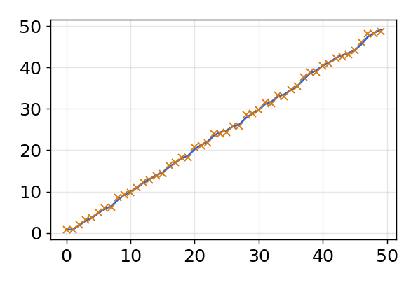
Choosing Sigma Points
- 목표: 함수에 대한 사전 지식 없이 모든 함수에 쓰는 일반 알고리즘, 가장 적은 점의 수
- 기준: 항등 함수 f(x) = x 에서 입력과 출력이 같아야 함, 아니면 필터 발산
- 1 개: 평균 그대로면 선형 Kalman filter, 평균 + 델타면 항등 함수에서 발산
- 2 개: 평균과 다른 한 점, 비대칭이 생겨 항등 함수를 만족시키기 어려움
- 3 개: 평균과 양쪽에 하나씩, Gaussian 의 대칭성 유지
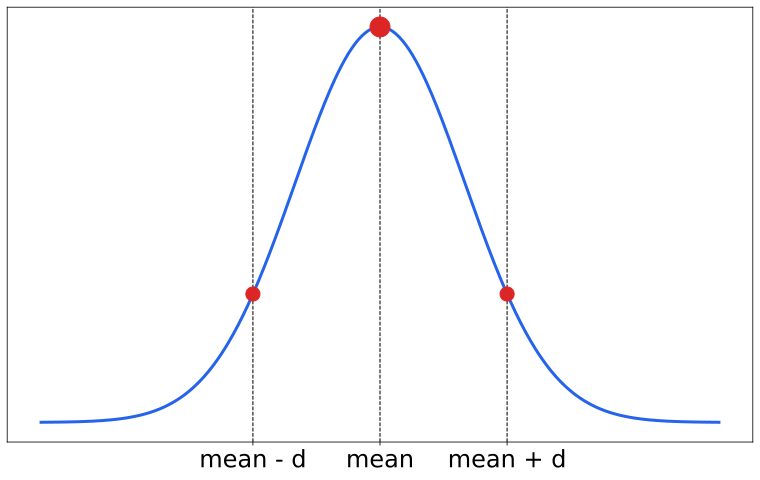
핵심: 차원당 3 개의 점, 평균과 그 양쪽 대칭 위치에서 시작
Weights and Constraints
- 가중 평균: 비선형이 강하면 중심점 가중치를 키우거나 바깥 점 가중치를 키움
- 해의 유일성 없음: w0 를 줄이면 w1, w2 를 키워 보상, 평균이 sigma point 일 필요도 없음
- 가까운 점: 국소 효과를 표본, 비선형이 강한 문제에 유리
- 먼 점: 비국소 효과와 non-Gaussian 거동 표본, 작은 가중치로 영향 조절
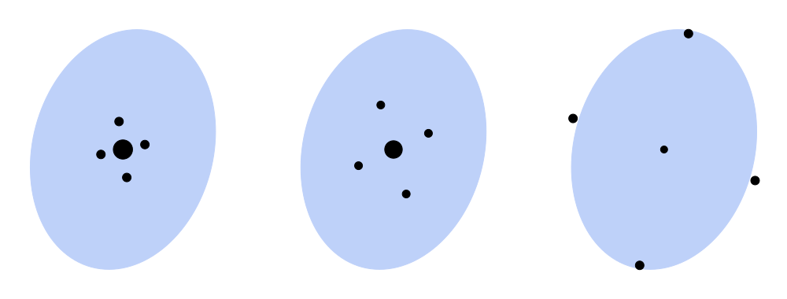
- 그림: 같은 타원에 대한 세 가지 sigma point 선택, 점 크기는 가중치
The Unscented Transform
- 변환: sigma point 를 비선형 함수에 통과, 변환된 점들의 평균과 공분산이 새 추정
- 결과: 임의의 분포에서 뽑은 점을 임의의 비선형 함수에 통과시켜 Gaussian 을 얻음
- 그림: 왼쪽 sigma point, 오른쪽 변환된 점과 UT 평균, 공분산(녹색)
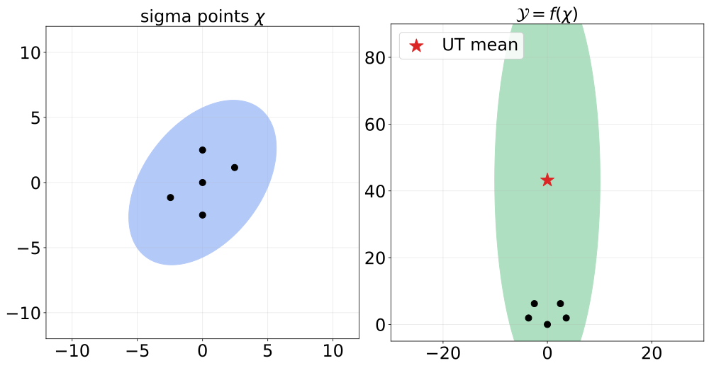
Accuracy of the Unscented Transform
- 같은 비선형 함수에 sigma point 5 개(빨간 점)만 통과시키고 unscented transform 으로 평균 계산
- 평균 오차가 x 약 -0.1, y 약 0.5 로 선형화의 40 이상보다 훨씬 작음, 점은 함수를 모르고 생성
- 조건: MerweScaledSigmaPoints n = 2, alpha 0.3, beta 2, kappa 0.1, 비교용 표본 5,000 개
from filterpy.kalman import unscented_transform, MerweScaledSigmaPoints mean = (0., 0.) p = np.array([[32., 15], [15., 40.]]) # create sigma points and weights points = MerweScaledSigmaPoints(n=2, alpha=.3, beta=2., kappa=.1) sigmas = points.sigma_points(mean, p) ### pass through nonlinear function sigmas_f = np.empty((5, 2)) for i in range(5): sigmas_f[i] = f_nonlinear_xy(sigmas[i, 0], sigmas[i ,1]) ### use unscented transform to get new mean and covariance ukf_mean, ukf_cov = unscented_transform(sigmas_f, points.Wm, points.Wc) np.random.seed(100) xs, ys = multivariate_normal(mean=mean, cov=p, size=5000).T plots.plot_monte_carlo_mean(xs, ys, f_nonlinear_xy, ukf_mean, 'Unscented Mean') ax = plt.gcf().axes[0] ax.scatter(sigmas[:,0], sigmas[:,1], c='r', s=30);
Difference in mean x=-0.097, y=0.549
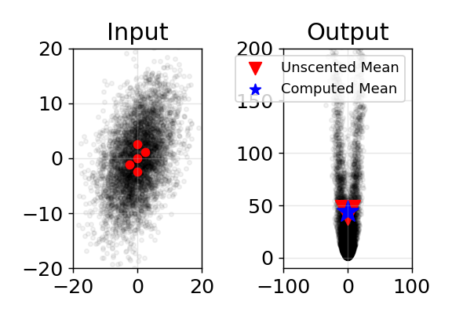
Predict Step
- sigma point: process 모델 f() 가 비선형이므로 x, P 에서 sigma point 와 가중치 생성
- prior: 각 sigma point 를 f(x, dt) 로 시간 전진, 변환된 점 집합이 prior
| Kalman | Unscented |
|---|---|
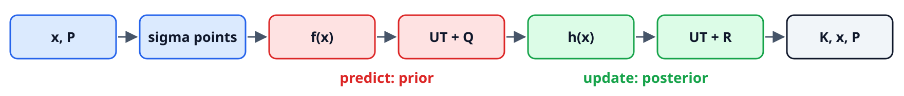
Update Step
- 측정 공간: prior sigma point 를 h() 로 측정 공간에 변환
- Kalman gain: 교차 공분산을 측정 공분산으로 나눈 비율
핵심: 선형 대수는 조금 다르지만 같은 Bayesian 알고리즘, 예측하고 측정하고 둘 사이를 고름
Kalman Filter and Unscented Kalman Filter
| Kalman Filter | Unscented Kalman Filter | |
|---|---|---|
| Predict | ||
| Update | ||
Van der Merwe's Scaled Sigma Point Algorithm
- 표준: 2005 년 무렵부터 연구와 산업에서 주로 쓰는 sigma point 알고리즘
- 장점: 다양한 문제에서 잘 동작, 성능과 정확도의 균형
- 파라미터: alpha, beta, kappa 로 sigma point 의 분포와 가중치 조절
- 그림: 1, 2 표준편차 타원 위의 sigma point, 점 크기는 가중치
- 관찰: alpha 가 크면 점이 퍼지고 중심 가중치는 커지며 나머지는 작아짐
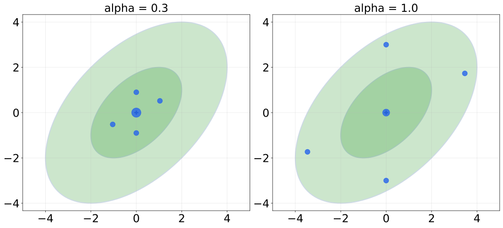
핵심: 평균에서 멀리 있는 점일수록 작은 가중치, 직관과 일치하는 선택
Sigma Point Computation
- 첫 점: 입력의 평균, 타원 중심
- n: 상태 x 의 차원
- 나머지: 공분산에 상수를 곱해 제곱근을 구하고 평균에 더하고 빼서 대칭 유지
- 첨자 i: 행렬의 i 번째 행 벡터, 그림의 화살표
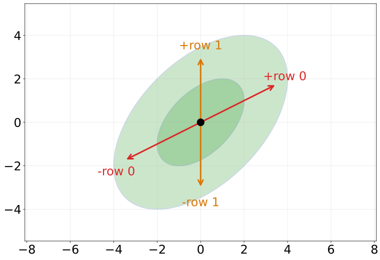
Weight Computation
- 두 가중치: 평균용 Wm 과 공분산용 Wc, 중심점만 서로 다름
- 퍼짐: sigma point 는 공분산 제곱근에 비례, 대략 ±1 sigma 에 배율을 곱한 위치
- 차원: 분모의 n 때문에 차원이 높을수록 점이 퍼지고 가중치는 작아짐
- 주의: 가중치 합이 1 이 아니거나 음수인 것은 정상
- 그림: n = 2, kappa = 1, beta = 2 에서 alpha 에 따른 가중치
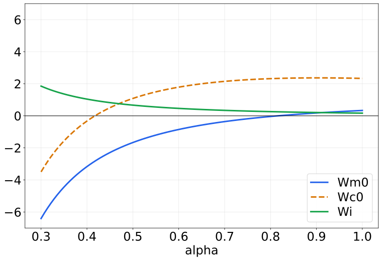
Reasonable Choices for the Parameters
- 권장값 beta = 2, kappa = 3 - n, 0 < alpha ≤ 1, 슬라이더로 바꿔 sigma point(왼쪽)와 가중치(오른쪽) 관찰
- alpha 가 크면 점이 바깥으로 퍼지고 중심 가중치 증가, beta 는 중심점의 공분산 가중치 Wc0 만 바꿈
- 조건: n = 2, 평균 (0, 0), 공분산 [[4, 2], [2, 4]], 녹색 타원은 1, 2 sigma, 점 크기는 |Wm|
from ipywidgets import interact, FloatSlider def plot_merwe(alpha, beta, kappa): x, P = np.array([0., 0.]), np.array([[4., 2.], [2., 4.]]) points = MerweScaledSigmaPoints(2, alpha, beta, kappa) s, w = points.sigma_points(x, P), np.abs(points.Wm) plt.subplot(121) plot_covariance_ellipse(x, P, std=[1, 2], facecolor='g', alpha=0.2) plt.scatter(s[:, 0], s[:, 1], s=w / w.min() * 100, zorder=3) plt.subplot(122) plt.bar(np.arange(5) - .2, points.Wm, .4, label='Wm') plt.bar(np.arange(5) + .2, points.Wc, .4, label='Wc') plt.legend() interact(plot_merwe, alpha=FloatSlider(value=.3, min=.1, max=1., step=.05), beta=FloatSlider(value=2., min=0., max=4., step=.5), kappa=FloatSlider(value=1., min=0., max=3., step=.5));
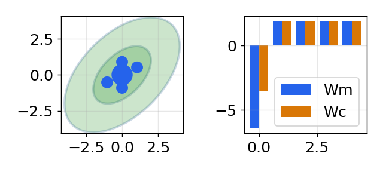
Using the UKF
- 목표: 이미 아는 2 차원 등속 추적 문제를 선형 KF 와 UKF 로 풀고 같은 점과 다른 점 비교
- 설계: x, F, H, R, Q 지정, 선형 문제에서 UKF 도 선형 KF 와 같은 최적 결과
- 센서: 위치만 측정, x, y 모두 오차 σ = 0.3 m, process noise 는 discrete white noise 모델
차이: UKF 는 행렬 F, H 대신 상태 전이 함수 f(x, dt) 와 측정 함수 h(x) 를 받음
Linear Kalman Filter
- x, y 가 매 초 1 m 씩 증가하는 대각선 이동을 위치 센서로 측정하고 선형 KF 로 batch 처리
- 선형 문제의 기준 해, 다음 슬라이드의 UKF 결과와 비교하는 데 사용
- 조건: σ = 0.3 m, dt = 1 s, Q 분산 0.02, 측정 100 개, seed 1234
from filterpy.kalman import KalmanFilter from filterpy.common import Q_discrete_white_noise std_x, std_y = .3, .3 dt = 1.0 np.random.seed(1234) kf = KalmanFilter(4, 2) kf.x = np.array([0., 0., 0., 0.]) kf.R = np.diag([std_x**2, std_y**2]) kf.F = np.array([[1, dt, 0, 0], [0, 1, 0, 0], [0, 0, 1, dt], [0, 0, 0, 1]]) kf.H = np.array([[1, 0, 0, 0], [0, 0, 1, 0]]) kf.Q[0:2, 0:2] = Q_discrete_white_noise(2, dt=1, var=0.02) kf.Q[2:4, 2:4] = Q_discrete_white_noise(2, dt=1, var=0.02) zs = [np.array([i + randn()*std_x, i + randn()*std_y]) for i in range(100)] xs, _, _, _ = kf.batch_filter(zs) plt.plot(xs[:, 0], xs[:, 2]);
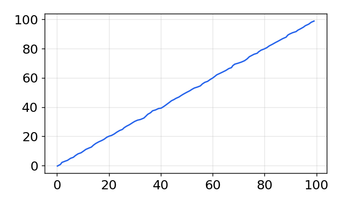
Unscented Kalman Filter
- 같은 측정을 f_cv(), h_cv() 함수와 MerweScaledSigmaPoints 로 만든 UKF 로 처리
- 두 궤적이 겹치고 KF 와의 차이 표준편차가 0.013 m, 선형 문제에서 사실상 같은 해
- 조건: n = 4, alpha 0.1, beta 2, kappa 1, R = 0.09 I, Q 분산 0.02, f_cv() 는 F 행렬 곱, h_cv() 는 x[[0, 2]]
sigmas = MerweScaledSigmaPoints(4, alpha=.1, beta=2., kappa=1.) ukf = UKF(dim_x=4, dim_z=2, fx=f_cv, hx=h_cv, dt=dt, points=sigmas) ukf.x = np.array([0., 0., 0., 0.]) ukf.R = np.diag([0.09, 0.09]) ukf.Q[0:2, 0:2] = Q_discrete_white_noise(2, dt=1, var=0.02) ukf.Q[2:4, 2:4] = Q_discrete_white_noise(2, dt=1, var=0.02) uxs = [] for z in zs: ukf.predict() ukf.update(z) uxs.append(ukf.x.copy()) uxs = np.array(uxs) plt.plot(xs[:, 0], xs[:, 2], lw=6, alpha=.4, label='KF') plt.plot(uxs[:, 0], uxs[:, 2], label='UKF'); plt.legend() print('UKF standard deviation {:.3f} meters'.format(np.std(uxs - xs)))
UKF standard deviation 0.013 meters
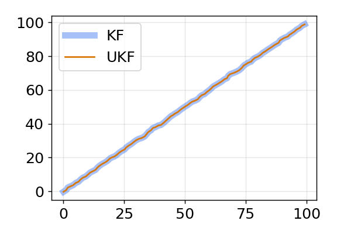
Tracking an Airplane
- 레이더: 전파를 쏘고 반사파가 돌아오는 시간으로 slant range, 안테나 이득으로 각도 계산
- 2 차원: 지상 거리와 고도만 추적, 각 차원이 독립이므로 일반성 유지
- 측정: slant range 와 지면 기준 elevation angle, 모두 비선형
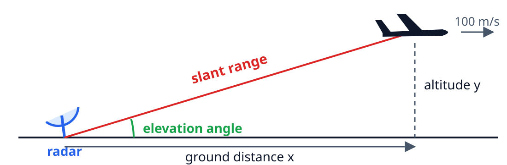
Measurement Function
- f_radar() 는 일정 고도 등속 비행의 선형 전이, h_radar() 는 상태를 거리와 고도각으로 변환
- 고도 1000 m 에서 x 를 바꾸며 h_radar() 출력을 그리면 거리와 각도 모두 x 에 대해 비선형
- 각도는 모듈러 값, 359 도와 1 도의 차이는 2 도이므로 지금은 각이 0 근처를 지나지 않게 배치
- 조건: 레이더 (0, 0), 고도 1000 m, x = -5 ~ 5 km
def f_radar(x, dt): F = np.array([[1, dt, 0], [0, 1, 0], [0, 0, 1]], dtype=float) return np.dot(F, x) def h_radar(x): dx = x[0] - h_radar.radar_pos[0] dy = x[2] - h_radar.radar_pos[1] slant_range = math.sqrt(dx**2 + dy**2) elevation_angle = math.atan2(dy, dx) return [slant_range, elevation_angle] h_radar.radar_pos = (0, 0) xs = np.linspace(-5000, 5000, 200) zs = np.array([h_radar([x, 100., 1000.]) for x in xs]) plt.subplot(121); plt.plot(xs, zs[:, 0]) plt.title('range (m)'); plt.xlabel('x (m)') plt.subplot(122); plt.plot(xs, np.degrees(zs[:, 1])) plt.title('elevation (deg)'); plt.xlabel('x (m)');
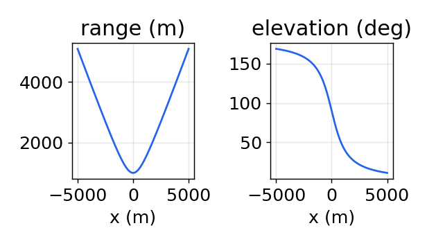
Radar Tracking
- RadarStation 은 거리와 고도각에 잡음을 더해 보고, ACSim 은 속도에 작은 잡음이 있는 등속 비행
- 레이더 바로 위 고도 1000 m 에서 100 m/s 로 비행, 위치, 속도, 고도 추정이 안정적으로 수렴
- 조건: 측정 주기 3 s, 거리 σ 5 m, 각도 σ 0.5 도, 초기 x = (0, 90, 1100), seed 200
dt = 3. # 3 seconds between readings range_std = 5 # meters elevation_angle_std = math.radians(0.5) points = MerweScaledSigmaPoints(n=3, alpha=.1, beta=2., kappa=0.) kf = UKF(3, 2, dt, fx=f_radar, hx=h_radar, points=points) kf.Q[0:2, 0:2] = Q_discrete_white_noise(2, dt=dt, var=0.1) kf.Q[2,2] = 0.1 kf.R = np.diag([range_std**2, elevation_angle_std**2]) kf.x = np.array([0., 90., 1100.]) kf.P = np.diag([300**2, 30**2, 150**2]) np.random.seed(200) radar = RadarStation((0, 0), range_std, elevation_angle_std) ac, time, xs = ACSim(ac_pos, (100, 0), 0.02), np.arange(0, 360 + dt, dt), [] for _ in time: r = radar.noisy_reading(ac.update(dt)) kf.predict() kf.update([r[0], r[1]]) xs.append(kf.x) plots.plot_radar(xs, time)
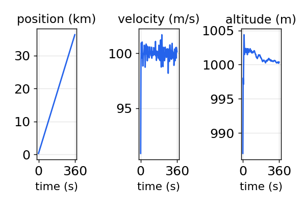
Tracking Maneuevering Aircraft
- 같은 필터로 1 분 뒤부터 분당 300 m 로 상승하는 항공기를 추적, 실선(UKF 고도)이 점선(실제)을 못 따라감
- 상태에 상승률이 없어 고도가 일정하다고 믿는 모델, 설계 수정이 필요
- 조건: t ≥ 60 s 에서 상승률 5 m/s, 측정 주기 3 s, 360 s 동안 추적
kf.x = np.array([0., 90., 1100.]) kf.P = np.diag([300**2, 30**2, 150**2]) ac = ACSim(ac_pos, (100, 0), 0.02) np.random.seed(200) time = np.arange(0, 360 + dt, dt) xs, ys = [], [] for t in time: if t >= 60: ac.vel[1] = 300/60 # 300 meters/minute climb r = radar.noisy_reading(ac.update(dt)) ys.append(ac.pos[1]) kf.predict() kf.update([r[0], r[1]]) xs.append(kf.x) plots.plot_altitude(xs, time, ys) print('Actual altitude: {:.1f}'.format(ac.pos[1])) print('UKF altitude : {:.1f}'.format(xs[-1][2]))
Actual altitude: 2515.6
UKF altitude : 1042.1
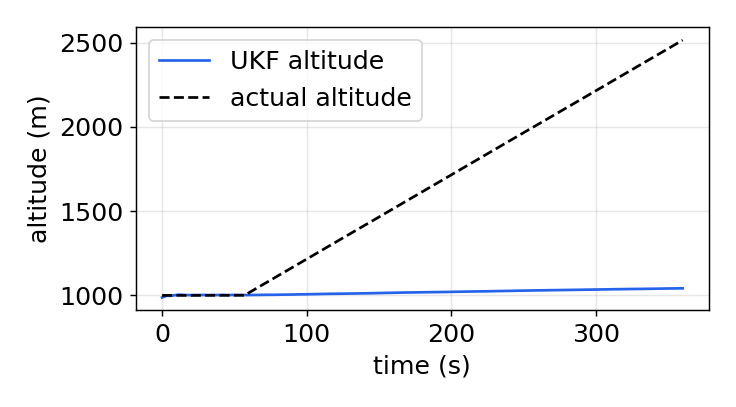
Add Climb Rate to the State
- 수정: 상태에 상승률을 추가, 상태 전이는 여전히 선형
- 그대로: 측정 함수는 그대로, 상태 차원이 바뀌므로 Q 만 4 x 4 블록으로 변경
핵심: 필터가 거동을 따라가지 못하면 그 거동을 설명하는 상태 변수가 빠졌는지 먼저 확인
Constant Velocity UKF
- 상승률을 포함한 4 상태 전이 f_cv_radar() 와 필터 생성 함수 cv_UKF(), R 은 표준편차 행렬의 제곱
- 결과는 생성된 필터의 Q, 지상 방향과 고도 방향의 2 x 2 블록 두 개가 대각선에 위치
- 조건: dt 3 s, n = 4, alpha 0.1, beta 2, kappa -1, Q 분산 0.1
def f_cv_radar(x, dt): """ state transition function for a constant velocity aircraft""" F = np.array([[1, dt, 0, 0], [0, 1, 0, 0], [0, 0, 1, dt], [0, 0, 0, 1]], dtype=float) return np.dot(F, x) dt = 3. def cv_UKF(fx, hx, R_std): points = MerweScaledSigmaPoints(n=4, alpha=.1, beta=2., kappa=-1.) kf = UKF(4, len(R_std), dt, fx=fx, hx=hx, points=points) kf.Q[0:2, 0:2] = Q_discrete_white_noise(2, dt=dt, var=0.1) kf.Q[2:4, 2:4] = Q_discrete_white_noise(2, dt=dt, var=0.1) kf.R = np.diag(R_std) kf.R = np.dot(kf.R, kf.R) # square to get variance kf.x = np.array([0., 90., 1100., 0.]) kf.P = np.diag([300**2, 3**2, 150**2, 3**2]) return kf kf_cv = cv_UKF(f_cv_radar, h_radar, R_std=[range_std, elevation_angle_std]) print(kf_cv.Q)
[[2.025 1.35 0. 0. ]
[1.35 0.9 0. 0. ]
[0. 0. 2.025 1.35 ]
[0. 0. 1.35 0.9 ]]
Tracking the Climb
- 상승률을 포함한 4 상태 cv_UKF 로 같은 상승 비행을 다시 추적
- 고도 추정에 잡음이 늘었지만 최종 고도가 실제 2515 m 에 가깝게 추적
- 조건: t ≥ 60 s 에서 상승률 5 m/s, P = diag(300^2, 3^2, 150^2, 3^2), seed 200
np.random.seed(200) ac = ACSim(ac_pos, (100, 0), 0.02) kf_cv = cv_UKF(f_cv_radar, h_radar, R_std=[range_std, elevation_angle_std]) time = np.arange(0, 360 + dt, dt) xs, ys = [], [] for t in time: if t >= 60: ac.vel[1] = 300/60 # 300 meters/minute climb r = radar.noisy_reading(ac.update(dt)) ys.append(ac.pos[1]) kf_cv.predict() kf_cv.update([r[0], r[1]]) xs.append(kf_cv.x) plots.plot_altitude(xs, time, ys) print('Actual altitude: {:.1f}'.format(ac.pos[1])) print('UKF altitude : {:.1f}'.format(xs[-1][2]))
Actual altitude: 2515.6
UKF altitude : 2500.1
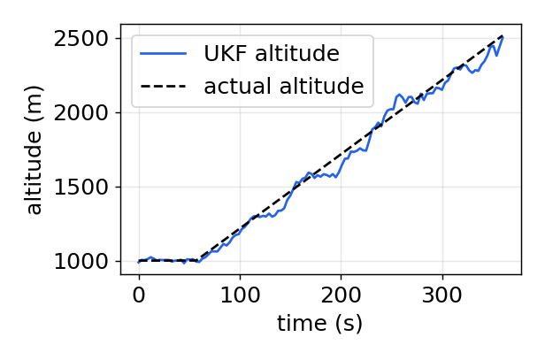
Sensor Fusion
- Doppler 속도 센서와의 sensor fusion 효과를 보기 위해 먼저 레이더만 쓰는 필터의 속도 정확도 측정
- 거리 오차를 500 m 로 키운 레이더만으로 추정한 속도, 수렴 구간 10 개를 뺀 표준편차 계산
- 조건: 거리 σ 500 m, 각도 σ = math.degrees(0.5), 측정 주기 3 s, 360 s
range_std = 500. elevation_angle_std = math.degrees(0.5) np.random.seed(200) radar = RadarStation((0, 0), range_std, elevation_angle_std) ac = ACSim(ac_pos, (100, 0), 0.02) kf_sf = cv_UKF(f_cv_radar, h_radar, R_std=[range_std, elevation_angle_std]) time = np.arange(0, 360 + dt, dt) xs = [] for _ in time: ac.update(dt) r = radar.noisy_reading(ac.pos) kf_sf.predict() kf_sf.update([r[0], r[1]]) xs.append(kf_sf.x) xs = np.asarray(xs) plots.plot_radar(xs, time, plot_x=False, plot_vel=True, plot_alt=False) print('Velocity std {:.1f} m/s'.format(np.std(xs[10:, 1])))
Velocity std 3.4 m/s
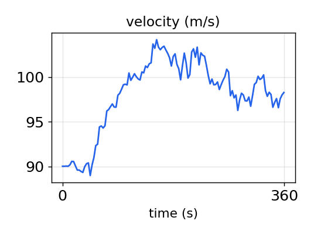
Doppler Velocity
- Doppler 센서가 x, y 속도를 2 m/s 로 측정, h_vel() 은 거리와 각도에 상태의 두 속도를 더해 4 개 값 반환
- 레이더만 쓸 때보다 속도 추정의 표준편차가 크게 감소, 서로 다른 정보를 주는 센서의 결합 효과
- 조건: 속도 σ 2 m/s, 거리 σ 500 m, 앞 슬라이드와 같은 레이더, 항공기, seed 200
def h_vel(x): dx = x[0] - h_vel.radar_pos[0] dz = x[2] - h_vel.radar_pos[1] slant_range = math.sqrt(dx**2 + dz**2) elevation_angle = math.atan2(dz, dx) return slant_range, elevation_angle, x[1], x[3] h_vel.radar_pos = (0, 0) vel_std = 2. kf_sf2 = cv_UKF(f_cv_radar, h_vel, R_std=[range_std, elevation_angle_std, vel_std, vel_std]) xs = [] for t in time: r = radar.noisy_reading(ac.update(dt)) vx = ac.vel[0] + randn()*vel_std # simulated doppler vz = ac.vel[1] + randn()*vel_std kf_sf2.predict() kf_sf2.update([r[0], r[1], vx, vz]) xs.append(kf_sf2.x) plots.plot_radar(xs, time, plot_x=False, plot_vel=True, plot_alt=False) print('Velocity std {:.1f} m/s'.format(np.std(np.asarray(xs)[10:, 1])))
Velocity std 0.9 m/s
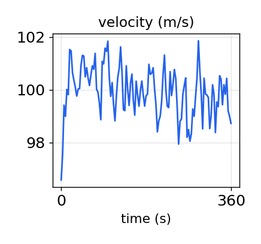
Complementary Sensors
GPS
- 초당 1 회 정도의 비교적 정확한 위치
- 속도 추정은 부정확
- 느린 갱신
Inertial system
- 50 Hz 의 매우 정확한 속도
- 위치 추정은 시간이 지나면 크게 틀어짐
- 빠른 갱신
- Complementary filter: 빠른 관성 속도를 GPS 갱신 사이에 적분해 높은 주기의 정확한 위치와 속도 생성
- 직교하는 강점: 한 센서의 약점이 다른 센서의 강점, 두 정보가 서로 겹치지 않음
- 자율주행: GNSS, IMU, 휠 오도메트리처럼 서로의 약점을 보완하는 센서 조합이 위치인식의 기본 구조
핵심: 강점과 약점이 서로 직교하는 센서를 결합하면 어느 한 센서보다 좋은 추정
Multiple Position Sensors
- VOR: GPS 이전 항공기 항법, 지상 국 방향(radial)만 알려 주는 bearing 센서
- 수동 방식: 두 국의 radial 교차점을 지도에서 찾음, 정확도 낮음
- Kalman filter: 두 bearing 측정으로 훨씬 정확한 위치 추정
- 그림: 부채꼴 폭은 센서 잡음 3 sigma, 항공기는 두 영역의 교차 부분에 존재
- 모델: 등속 모델, 행렬 곱 대신 위치를 직접 갱신
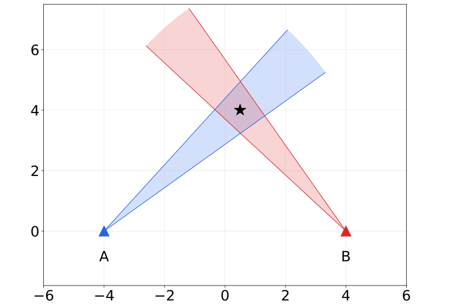
Two Bearing Sensors
- A(-400, 0), B(400, 0) 두 bearing 센서로 (100, 200) 에서 대각선으로 움직이는 목표물 추적
- 시작 부분은 오차가 크지만 곧 수렴해 점선(실제 경로)을 잘 따라감
- plot_straight_line_target() 은 목표물을 매 단계 (1, 1) m 이동, 두 bearing 에 잡음 추가
- 조건: bearing σ 0.5 도, Q 분산 1, dt 0.1 s, P = 1000 I, 300 단계, seed 123
def moving_target_filter(pos, std_noise, Q, dt=0.1, kappa=0.0): points = MerweScaledSigmaPoints(n=4, alpha=.1, beta=2., kappa=kappa) f = UKF(dim_x=4, dim_z=2, dt=dt, hx=hx_VOR, fx=fx_VOR, points=points) f.x = np.array([pos[0], 1., pos[1], 1.]) q = Q_discrete_white_noise(2, dt, Q) f.Q[0:2, 0:2] = q f.Q[2:4, 2:4] = q f.R *= std_noise**2 f.P *= 1000 return f np.random.seed(123) target_pos = [100, 200] std_noise = math.radians(0.5) f = moving_target_filter(target_pos, std_noise, Q=1.0) plot_straight_line_target(f, std_noise) plt.legend(loc=4);
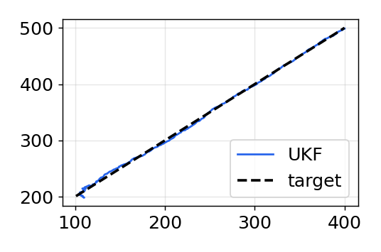
Angle Nonlinearity
- 목표물을 두 센서 사이 (0, 0) 에서 출발, B 에서 본 각이 π 근처라 residual 이 0 대신 거의 2π 가 되는 문제
- 시작 부분 추정이 크게 흔들림, residual 계산 함수를 따로 지정해야 해결
- 조건: 목표물 (0, 0) 출발, seed 0, 나머지 조건 동일
def plot_straight_line_target(f, std_noise): xs, txs = [], [] for i in range(300): target_pos[0] += 1 + randn()*0.0001 target_pos[1] += 1 + randn()*0.0001 txs.append((target_pos[0], target_pos[1])) z = measurement(sa_pos, sb_pos, target_pos) z[0] += randn() * std_noise z[1] += randn() * std_noise f.predict() f.update(z) xs.append(f.x) xs, txs = np.asarray(xs), np.asarray(txs) plt.plot(xs[:, 0], xs[:, 2], label='UKF') plt.plot(txs[:, 0], txs[:, 1], ls='--', lw=2, c='k', label='target') np.random.seed(0) target_pos = [0, 0] f = moving_target_filter(target_pos, std_noise, Q=1.0) plot_straight_line_target(f, std_noise) plt.legend(loc=4);
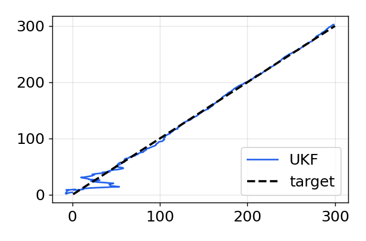
Effects of Sensor Error and Geometry
- 기하: 센서와 목표물의 배치가 만드는 물리적 한계, 필터 설계로 극복하기 어려움
- 평행한 radial: 작은 각도 오차가 매우 큰 거리 오차로
- 비선형: x 축과 y 축의 오차 비율이 실제 bearing 에 따라 달라짐
- 그림: 거리 100 m 의 1 도 sigma bearing 오차, 45 도와 180 도
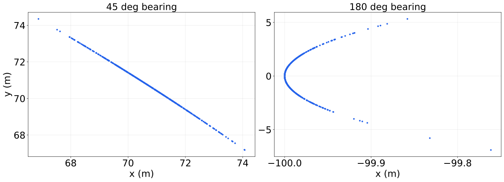
One Sensor
- 질문: 작은 각도 오차가 큰 위치 오차를 만드는데 UKF 가 잘 동작한 이유
- 움직이는 목표: 측정 하나는 오차가 크지만 연속 측정은 오른쪽 위로의 뚜렷한 추세
- Kalman gain: 측정 함수로 오차 분포를 반영, 45 도 선 방향 오차는 낮추고 수직 방향은 신뢰
- 측정 수: 그림은 위치마다 측정 100 개, 필터는 갱신마다 1 개만 받으므로 녹색 점선만큼 맞추지는 못함
- 거리 정보 없음: 1000 km 밖에 작은 P 로 초기화하면 1 도가 17.5 km, 수렴 불가
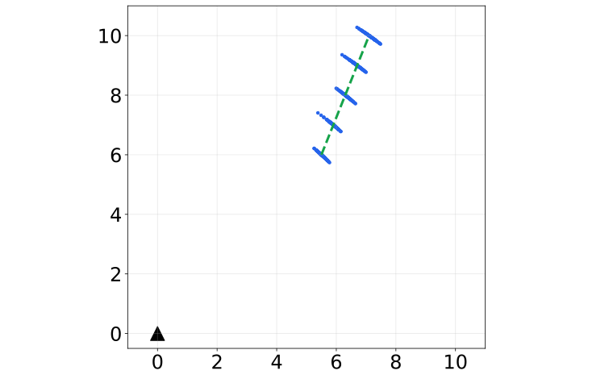
핵심: 필터는 움직임 모델과 측정 오차의 방향을 함께 이용, 단일 측정보다 훨씬 정확
Two Sensors
- 두 번째 센서: 두 bearing 의 교차로 거리 정보를 얻음, 배치에 따라 오차 모양이 달라짐
- 그림 표기: 두 센서(삼각형, 사각형), 두 잡음 bearing 의 교차점을 빨간 점으로
- 직교 배치: x 모양 교차, 센서 B 의 y 좌표에 가까워질수록 길쭉한 타원
- 비직교 배치: 한 센서 바로 옆에서 출발해 다른 센서를 지나감, 교차가 비직교라 오차가 넓게 퍼짐
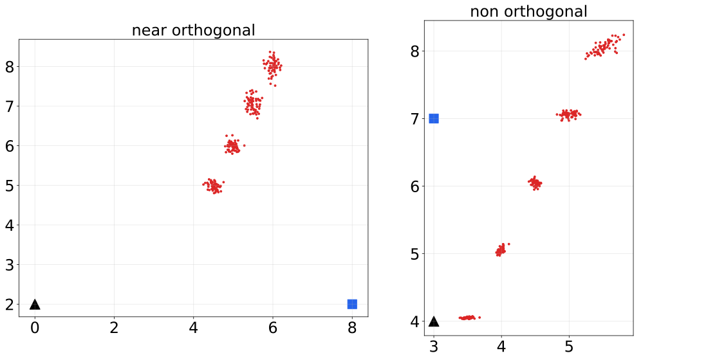
Implementation of the UKF
- 구현: 식을 코드로 옮기는 연습, weights, sigma points, predict, update 순서
- 저장: sigma point 를 행으로 저장, i 번째 점을 sigmas[i] 로 참조
- 크기: 2n + 1 행, n 열, n = 3 이면 7 행 3 열
Weights
- Van der Merwe 가중치 식을 NumPy 로 구현, lambda 는 예약어라 lambda_ 로 표기
- 직접 계산한 Wm, Wc 가 MerweScaledSigmaPoints 의 값과 일치하는지 확인
- 작은 alpha 에서는 중심 가중치가 큰 음수, 합은 1 이어도 개별 값은 1 을 넘을 수 있음
- 조건: n = 2, alpha 0.1, beta 2, kappa 1
def merwe_weights(n, alpha, beta, kappa): lambda_ = alpha**2 * (n + kappa) - n Wc = np.full(2*n + 1, 1. / (2*(n + lambda_))) Wm = np.full(2*n + 1, 1. / (2*(n + lambda_))) Wc[0] = lambda_ / (n + lambda_) + (1. - alpha**2 + beta) Wm[0] = lambda_ / (n + lambda_) return Wm, Wc Wm, Wc = merwe_weights(2, .1, 2., 1.) points = MerweScaledSigmaPoints(n=2, alpha=.1, beta=2., kappa=1.) print('Wm', Wm, np.allclose(Wm, points.Wm)) print('Wc', Wc, np.allclose(Wc, points.Wc)) print('sum Wm', Wm.sum())
Wm [-65.6667 16.6667 16.6667 16.6667 16.6667] True
Wc [-62.6767 16.6667 16.6667 16.6667 16.6667] True
sum Wm 1.000000000000007
Matrix Square Root
- 제곱근: 유일한 정의 없음, SS = Σ 를 만족하는 S 가 한 가지 정의
- 선택: S 와 그 전치의 곱이 Σ 가 되는 S, 수치적으로 계산이 쉬움
- Cholesky: 대칭 양의 정부호 행렬을 삼각 행렬과 그 전치로 분해
- scipy: scipy.linalg.cholesky() 는 기본으로 상삼각 행렬 U 반환
- 행 단위: U 의 행을 sigma point 에 사용(그림의 화살표), 하삼각 결과를 쓰는 구현은 열 단위
Sigma Points
- Cholesky 로 (n + λ)P 의 제곱근 U 를 구하고 평균에 U 의 각 행을 더하고 빼서 sigma point 생성
- 상삼각 U 에 대해 U^T U 가 원래 행렬을 복원, 직접 만든 점이 FilterPy 결과와 일치
- 조건: P = [[1, 0.1], [0.1, 1]], 평균 (0, 0), alpha 0.1, kappa 1
import scipy.linalg a = np.array([[2., .1], [.1, 3]]) s = scipy.linalg.cholesky(a) print("cholesky:"); print(s) print(np.allclose(np.dot(s.T, s), a)) def sigma_points(X, P, alpha, kappa): n = len(X) lambda_ = alpha**2 * (n + kappa) - n sigmas = np.zeros((2*n+1, n)) U = scipy.linalg.cholesky((n+lambda_)*P) # sqrt sigmas[0] = X for k in range(n): sigmas[k+1] = X + U[k] sigmas[n+k+1] = X - U[k] return sigmas P = np.array([[1., .1], [.1, 1]]) sigmas = sigma_points(np.array([0., 0.]), P, alpha=.1, kappa=1.) points = MerweScaledSigmaPoints(n=2, alpha=.1, beta=2., kappa=1.) print("sigmas:"); print(sigmas) print(np.allclose(sigmas, points.sigma_points([0., 0.], P)))
cholesky:
[[1.4142 0.0707]
[0. 1.7306]]
True
sigmas:
[[ 0. 0. ]
[ 0.1732 0.0173]
[ 0. 0.1723]
[-0.1732 -0.0173]
[ 0. -0.1723]]
True
Unscented Transform
- np.dot(Wm, sigmas) 로 가중 평균, np.outer(y, y) 로 y y^T 를 누적해 공분산, 직접 만든 함수로 비선형 변환
- 별(평균)과 타원(공분산)이 FilterPy 의 unscented_transform 결과와 일치
- 조건: f(x, y) = (x + y, 0.1x^2 + y^2), 평균 (0, 0), P = [[32, 15], [15, 40]], alpha 0.3, kappa 0.1
def my_unscented_transform(sigmas, Wm, Wc, Q): x = np.dot(Wm, sigmas) kmax, n = sigmas.shape P = np.zeros((n, n)) for k in range(kmax): y = sigmas[k] - x P += Wc[k] * np.outer(y, y) P += Q return x, P P = np.array([[32., 15], [15., 40.]]) sigmas = sigma_points(np.array([0., 0.]), P, alpha=.3, kappa=.1) Wm, Wc = merwe_weights(2, .3, 2., .1) sigmas_f = np.array([f_nonlinear_xy(*s) for s in sigmas]) x, Pf = my_unscented_transform(sigmas_f, Wm, Wc, np.zeros((2, 2))) print(np.allclose(x, unscented_transform(sigmas_f, Wm, Wc)[0])) plt.scatter(sigmas_f[:, 0], sigmas_f[:, 1], s=80, c='k') plot_covariance_ellipse(x, Pf, facecolor='g', alpha=0.3) plt.scatter(*x, marker='*', s=400, c='C3');
True
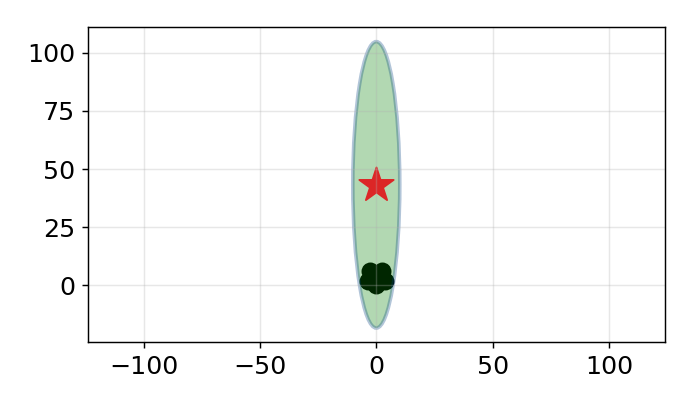
Predict Step
- 필터의 행렬과 벡터를 저장하는 클래스, predict() 는 sigma point 를 f 에 통과시키고 UT 로 prior 계산
- 등속 모델에서 1 초 예측, 위치가 속도만큼 이동하고 위치 분산이 커짐
- 조건: x = (0, 1, 0, 1), P = I, Q = I, dt 1 s, alpha 0.1, beta 2, kappa 1
class MyUKF: def __init__(self, dim_x, dim_z, dt, fx, hx, alpha, beta, kappa): self._dim_x, self._dim_z, self._dt = dim_x, dim_z, dt self.fx, self.hx = fx, hx self.Wm, self.Wc = merwe_weights(dim_x, alpha, beta, kappa) self._num_sigmas = 2*dim_x + 1 self.x, self.P = np.zeros(dim_x), np.eye(dim_x) self.Q, self.R = np.eye(dim_x), np.eye(dim_z) self.sigmas_f = np.zeros((self._num_sigmas, dim_x)) self.sigmas_h = np.zeros((self._num_sigmas, dim_z)) def predict(self, sigma_points_fn): # calculate sigma points for given mean and covariance sigmas = sigma_points_fn(self.x, self.P) for i in range(self._num_sigmas): self.sigmas_f[i] = self.fx(sigmas[i], self._dt) self.xp, self.Pp = my_unscented_transform(self.sigmas_f, self.Wm, self.Wc, self.Q) ukf = MyUKF(4, 2, 1., f_cv, h_cv, .1, 2., 1.) ukf.x = np.array([0., 1., 0., 1.]) ukf.predict(lambda x, P: sigma_points(x, P, .1, 1.)) print('xp:', ukf.xp); print('Pp:'); print(ukf.Pp)
xp: [1. 1. 1. 1.]
Pp:
[[ 3. 1. -0. -0.]
[ 1. 2. 0. 0.]
[-0. 0. 3. 1.]
[-0. 0. 1. 2.]]
Update Step
- update() 는 prior sigma point 를 h 로 측정 공간에 옮기고 UT, 교차 공분산 Pxz, gain K 계산
- 앞 슬라이드의 prior (1, 1, 1, 1) 에 측정 (1.2, 0.9) 를 반영, 위치가 측정 쪽으로 이동하고 분산 감소
- 조건: prior 는 앞 슬라이드의 xp, Pp, R = I, 측정 z = (1.2, 0.9)
from numpy.linalg import inv def update(self, z): sigmas_f, sigmas_h = self.sigmas_f, self.sigmas_h # transform sigma points into measurement space for i in range(self._num_sigmas): sigmas_h[i] = self.hx(sigmas_f[i]) # mean and covariance of prediction passed through UT zp, Pz = my_unscented_transform(sigmas_h, self.Wm, self.Wc, self.R) # compute cross variance of the state and the measurements Pxz = np.zeros((self._dim_x, self._dim_z)) for i in range(self._num_sigmas): Pxz += self.Wc[i] * np.outer(sigmas_f[i] - self.xp, sigmas_h[i] - zp) K = np.dot(Pxz, inv(Pz)) # Kalman gain self.x = self.xp + np.dot(K, z - zp) self.P = self.Pp - np.dot(K, Pz).dot(K.T) MyUKF.update = update ukf.update(np.array([1.2, .9])) print('x:', ukf.x); print('P diag:', ukf.P.diagonal())
x: [1.1333 1.0667 0.9333 0.9667]
P diag: [1.6667 1.6667 1.6667 1.6667]
Running the Filter
- 직접 구현한 MyUKF 로 10.7 의 대각선 이동 측정을 처리하고 선형 KF 결과와 비교
- 두 궤적이 겹침, 식을 그대로 옮긴 30 줄 남짓의 코드로 동작하는 UKF 완성
- 조건: 같은 측정 zs, R = 0.09 I, Q 는 선형 KF 와 동일, alpha 0.1, beta 2, kappa 1
ukf = MyUKF(4, 2, 1., f_cv, h_cv, .1, 2., 1.) ukf.R, ukf.Q, ukf.P = np.diag([.09, .09]), kf.Q, np.eye(4) mxs = [] for z in zs: ukf.predict(lambda x, P: sigma_points(x, P, .1, 1.)) ukf.update(z) mxs.append(ukf.x) mxs = np.array(mxs) plt.plot(xs[:, 0], xs[:, 2], lw=6, alpha=.4, label='KF') plt.plot(mxs[:, 0], mxs[:, 2], label='MyUKF'); plt.legend();
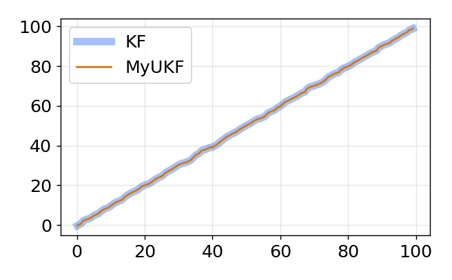
Batch Processing
- 이미 모은 측정 배열을 batch_filter() 에 넣어 한 번에 처리, 모든 단계의 추정 xs 와 공분산 covs 반환
- 레이더 추적 문제를 12 초 주기 측정으로 batch 처리, 위치, 속도, 고도 추정
- 조건: dt 12 s, 거리 σ 5 m, 각도 σ 0.5 도, 초기 x = (0, 90, 1100), seed 200
dt = 12. # 12 seconds between readings range_std = 5 # meters bearing_std = math.radians(0.5) points = MerweScaledSigmaPoints(n=3, alpha=.1, beta=2., kappa=0.) kf = UKF(3, 2, dt, fx=f_radar, hx=h_radar, points=points) kf.Q[0:2 ,0:2] = Q_discrete_white_noise(2, dt=dt, var=0.1) kf.Q[2, 2] = 0.1 kf.R = np.diag([range_std**2, bearing_std**2]) kf.x = np.array([0., 90., 1100.]) kf.P = np.diag([300**2, 30**2, 150**2]) radar = RadarStation((0, 0), range_std, bearing_std) ac = ACSim(ac_pos, (100, 0), 0.02) np.random.seed(200) t = np.arange(0, 360 + dt, dt) zs = [radar.noisy_reading(ac.update(dt)) for _ in t] xs, covs = kf.batch_filter(zs) plots.plot_radar(xs, t)
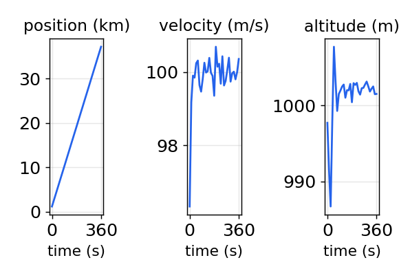
Smoothing the Results
- 차가 직진 중 왼쪽으로 꺾는 듯한 잡음 측정, 필터는 잡음인지 회전 시작인지 판단할 수 없음
- 사후 처리라면 이후 측정으로 판단 가능, batch 결과를 RTS smoother 로 뒤에서부터 보정
- 위치 개선은 작지만 속도는 개선되고 고도는 크게 개선, 사후 처리가 가능하면 항상 사용 권장
- 조건: 앞 슬라이드의 batch 결과 xs, covs, 출력은 마지막 5 개 점의 위치 차이
Ms, P, K = kf.rts_smoother(xs, covs) plots.plot_rts_output(xs, Ms, t)
Difference in position in meters:
[-1.4166 -0.2815 1.2679 -1.2405 -2.1863]
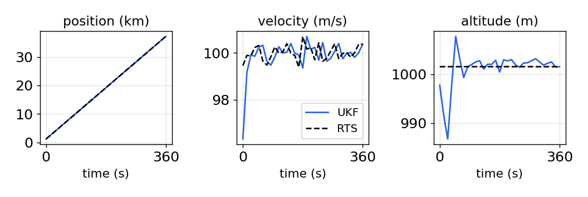
Choosing the Sigma Parameters
- n = 1, beta = 2, kappa = 3 - n 에서 alpha 를 바꿔 출력, alpha 1: 점 0, ±3, λ = 2, 가중치 0.67, 0.17, 0.17
- alpha 200: ±600 으로 100 표준편차 이상 떨어짐, 평균 가중치는 1, 나머지는 0 에 가까움
- 조건: 평균 0, 분산 3
plots.print_sigmas(mean=0, cov=3, alpha=1) plots.print_sigmas(mean=0, cov=3, alpha=200)
sigmas: [ 0. 3. -3.]
mean weights: [0.6667 0.1667 0.1667]
cov weights: [2.6667 0.1667 0.1667]
lambda: 2.0
sum cov 2.9999999999999996
sigmas: [ 0. 600. -600.]
mean weights: [1. 0. 0.]
cov weights: [-39996. 0. 0.]
lambda: 119999.0
sum cov -39996.00000000001
Very Small Alpha
- 권장 범위 0 < alpha ≤ 1 의 작은 값 10^-3 으로 sigma point 와 가중치 확인
- 점이 평균에 거의 붙고 가중치가 ±10^6 규모, 그래도 공분산 가중치의 합은 유한
- 조건: 평균 0, 분산 13, alpha 0.001, kappa 0
plots.print_sigmas(mean=0, cov=13, alpha=.001, kappa=0)
sigmas: [ 0. 0.0036 -0.0036]
mean weights: [-999999. 500000. 500000.]
cov weights: [-999996. 500000. 500000.]
lambda: -0.999999
sum cov 3.9999989999923855
Effect of the Parameters
- lambda 증가: 평균 가중치는 1 로, 나머지는 0 으로 접근, 공분산 크기와 무관
- 꼬리가 두꺼운 분포: 꼬리를 표본하도록 점을 넓게 퍼뜨리는 것이 합리적
- 꼬리가 거의 없는 분포: 실제 데이터가 없는 영역을 피해 점을 평균 가까이
- 그림: n = 1, kappa = 2 에서 alpha 에 따른 점의 퍼짐과 가중치, 먼 점일수록 작은 가중치
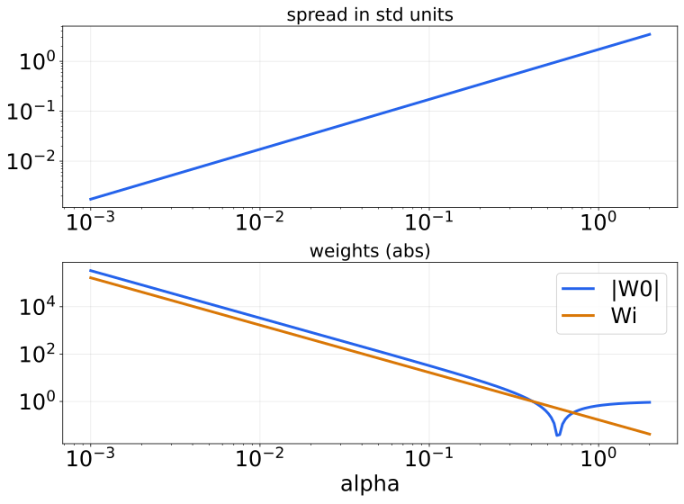
Robot Localization
- 문제: 알려진 landmark 를 센서로 감지하며 움직이는 로봇의 위치 추정
- 예: 나무, 건물을 인식하는 자율주행차, 로봇 청소기, 물류 창고 로봇
- 운동: 자동차와 같은 4 바퀴, 앞바퀴를 꺾어 뒤 차축 중심으로 회전, 비선형
- 센서: landmark 까지의 대략적인 거리와 bearing, 제곱근과 삼각함수로 비선형
- 선택: process, 측정 모델 모두 비선형, 둘 다 다루는 UKF 가 적합
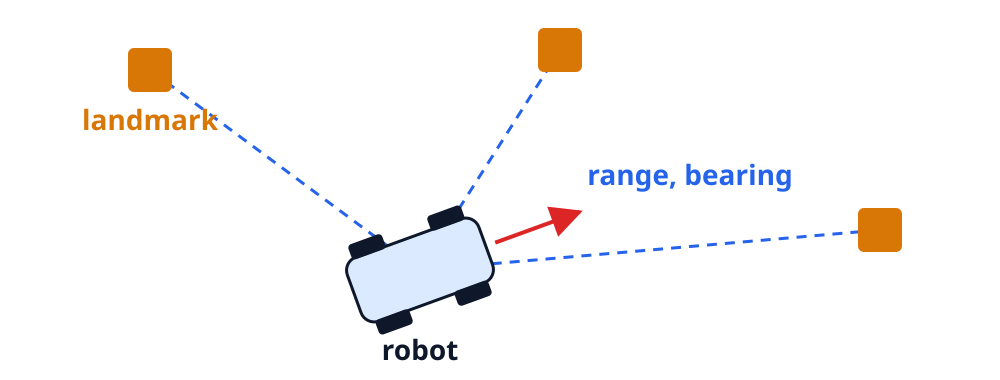
핵심: 실제 문제의 설계 과정, 모델 선택부터 각도 처리까지 하나씩 해결
Robot Motion Model
- 조향: 앞바퀴가 향하는 방향으로 앞부분이 이동, 뒷바퀴를 중심으로 회전
- 복잡성: 미끄러짐, 타이어 특성, 안쪽과 바깥 바퀴의 회전 반경 차이
- bicycle model: 저속 로봇에서 잘 동작하는 단순 모델
- 그림: 짧은 시간 뒤 뒷바퀴(파란색)가 반경 R 의 원을 따라 beta 만큼 회전
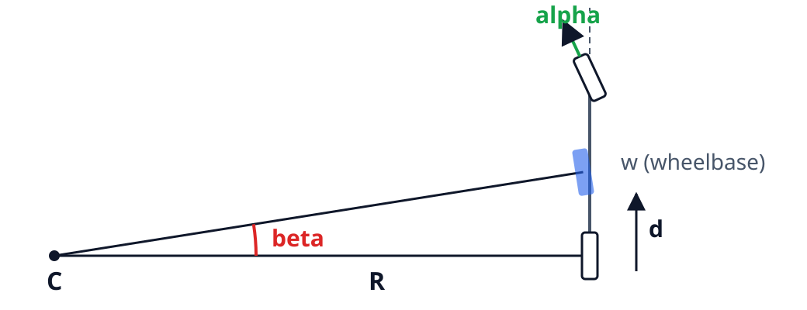
Pose After the Turn
- 짧은 시간: 반경 R 의 원을 따라 회전한다고 근사, 회전 중심 C
- C 대입: 이전 자세와 회전각만으로 새 자세 계산
핵심: 조향 모델의 세부보다 운동 모델이 비선형이라는 점이 중요, 필터가 이를 다뤄야 함
Design the State Variables
- 상태: 로봇의 위치와 방향, 속도까지 넣으면 수학이 더 어려워짐
- 제어 입력: 명령 속도 v 와 조향각 alpha
- system model: 비선형 운동 모델과 white noise
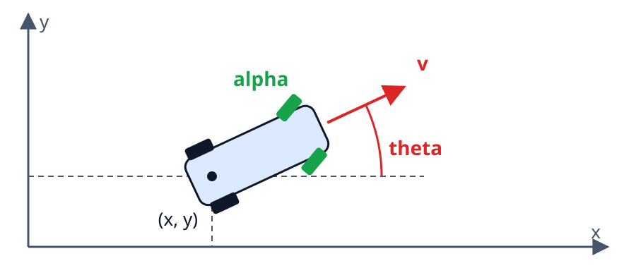
Design the System Model
- bicycle model 을 move(x, dt, u, wheelbase) 로 구현, 같은 속도에 조향각만 바꿔 50 단계 이동
- 조향각에 따라 원호 반경이 달라지는 비선형 운동, dt 가 크거나 강한 비선형이면 Runge Kutta 필요
- 조건: v 1.1 m/s, dt 0.1 s, wheelbase 0.5 m, 조향각 -20, 0, 10, 30 도
def move(x, dt, u, wheelbase): hdg = x[2] vel = u[0] steering_angle = u[1] dist = vel * dt if abs(steering_angle) > 0.001: # is robot turning? beta = (dist / wheelbase) * tan(steering_angle) r = wheelbase / tan(steering_angle) # radius sinh, sinhb = sin(hdg), sin(hdg + beta) cosh, coshb = cos(hdg), cos(hdg + beta) return x + np.array([-r*sinh + r*sinhb, r*cosh - r*coshb, beta]) else: # moving in straight line return x + np.array([dist*cos(hdg), dist*sin(hdg), 0]) for steer in (-20, 0, 10, 30): track = [np.array([0., 0., 0.])] for _ in range(50): track.append(move(track[-1], 0.1, [1.1, np.radians(steer)], 0.5)) plt.plot(*np.array(track)[:, :2].T, label='{} deg'.format(steer)) plt.axis('equal'); plt.legend();
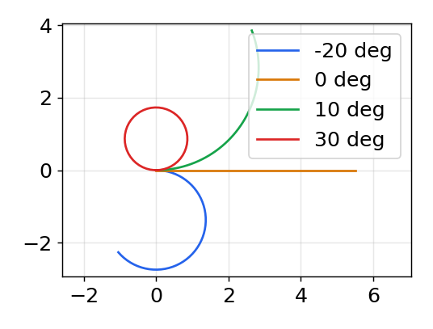
Design the Measurement Model
- 센서: 알려진 여러 위치(landmark)까지의 잡음 섞인 거리와 bearing
- bearing: 로봇 방향 기준이므로 landmark 방향 각에서 로봇 방향 theta 를 뺌
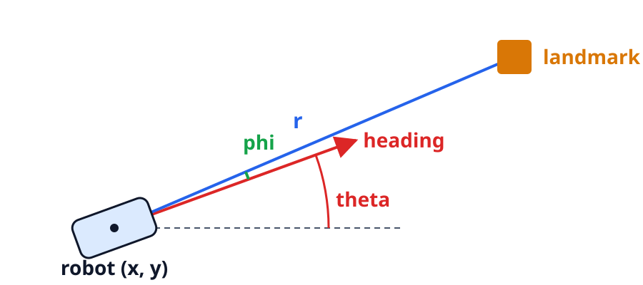
Design Measurement Noise
- 거리와 bearing 잡음은 독립, R = diag(σ_range^2, σ_bearing^2) 를 landmark 수만큼 반복
- sense() 로 로봇 (2, 6) 에서 측정 400 회, 측정을 landmark 위치로 되돌리면 멀수록 옆으로 긴 원호
- 조건: 거리 σ 0.3 m, bearing σ 0.1 rad, 로봇 방향 0.3 rad, landmarks (5, 10), (10, 5), (15, 15)
def sense(sim_pos, landmarks, sigma_range, sigma_bearing): x, y = sim_pos[0], sim_pos[1] z = [] for lmark in landmarks: dx, dy = lmark[0] - x, lmark[1] - y d = sqrt(dx**2 + dy**2) + randn()*sigma_range bearing = atan2(lmark[1] - y, lmark[0] - x) a = normalize_angle(bearing - sim_pos[2] + randn()*sigma_bearing) z.extend([d, a]) return z pos = np.array([2., 6., .3]) landmarks = np.array([[5, 10], [10, 5], [15, 15]]) zs = np.array([sense(pos, landmarks, 0.3, 0.1) for _ in range(400)]) d, a = zs[:, 0::2], zs[:, 1::2] + pos[2] plt.scatter(pos[0] + d*np.cos(a), pos[1] + d*np.sin(a), s=4, c='C1') plt.scatter(landmarks[:, 0], landmarks[:, 1], marker='s', s=100) plt.scatter(pos[0], pos[1], s=150, c='k'); plt.axis('equal');
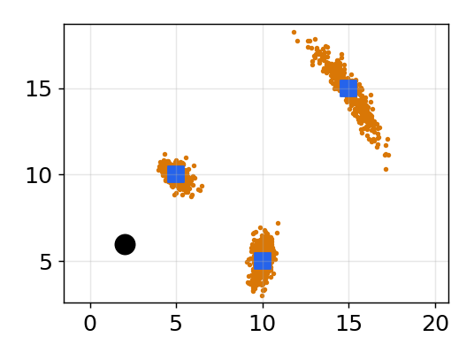
Angle Residual
- 측정 1 도, h(x) 359 도이면 단순 뺄셈은 -358 도, normalize_angle() 로 [-π, π) 정규화해 2 도
- 측정은 index 1, 3, 5, ..., 상태는 index 2 가 각도, 그래프는 정규화 결과의 톱니 모양
- 조건: 측정 형식 [dist_1, bearing_1, dist_2, bearing_2, ...], 상태 [x, y, theta], 입력 -540 ~ 540 도
def normalize_angle(x): x = x % (2 * np.pi) # force in range [0, 2 pi) if x > np.pi: # move to [-pi, pi) x -= 2 * np.pi return x def residual_h(a, b): y = a - b # data in format [dist_1, bearing_1, dist_2, bearing_2,...] for i in range(0, len(y), 2): y[i + 1] = normalize_angle(y[i + 1]) return y def residual_x(a, b): y = a - b y[2] = normalize_angle(y[2]) return y print(np.degrees(normalize_angle(np.radians(1-359)))) angles = np.arange(-540, 541) plt.plot(angles, [np.degrees(normalize_angle(np.radians(a))) for a in angles]) plt.xlabel('angle (deg)'); plt.ylabel('normalized (deg)');
1.9999999999999774
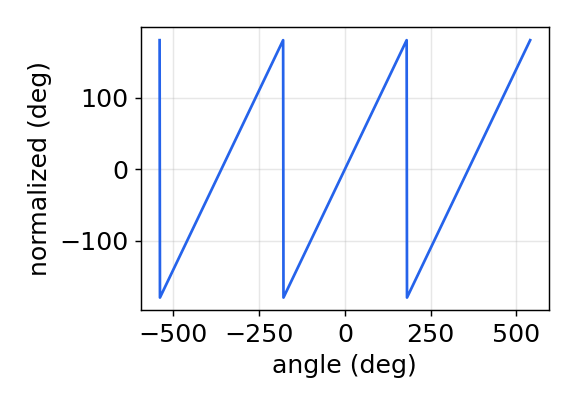
Measurement Function
- Hx() 는 landmark 배열을 받아 [dist_1, bearing_1, dist_2, bearing_2, ...] 반환, 개수가 바뀌어도 동작
- 로봇 (2, 6), 방향 0.3 rad(빨간 화살표) 에서 세 landmark 까지의 거리와 bearing 을 그림에 표시
- 조건: landmarks (5, 10), (10, 5), (15, 15), bearing 은 [-π, π) 로 정규화
def Hx(x, landmarks): """ takes a state variable and returns the measurement that would correspond to that state. """ hx = [] for lmark in landmarks: px, py = lmark dist = sqrt((px - x[0])**2 + (py - x[1])**2) angle = atan2(py - x[1], px - x[0]) hx.extend([dist, normalize_angle(angle - x[2])]) return np.array(hx) x = np.array([2., 6., .3]) landmarks = np.array([[5, 10], [10, 5], [15, 15]]) z = Hx(x, landmarks) for (px, py), d, a in zip(landmarks, z[0::2], z[1::2]): plt.plot([x[0], px], [x[1], py], 'k--') plt.text((x[0]+px)/2, (x[1]+py)/2 + .6, 'r={:.1f}, {:.0f} deg'.format(d, np.degrees(a))) plt.scatter(landmarks[:, 0], landmarks[:, 1], marker='s', s=100) plt.quiver(x[0], x[1], cos(x[2]), sin(x[2]), color='C3') plt.xlim(0, 20); plt.ylim(3, 18);
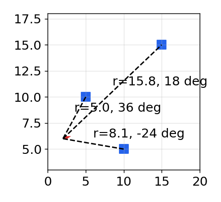
Mean of Angles
- 문제: unscented transform 은 상태와 측정 벡터의 평균을 계산, 둘 다 각도를 포함
- 예: 359 도와 3 도의 평균은 1 도가 직관적이지만 단순 산술 평균은 181 도
- 해결: sin 과 cos 의 평균으로 atan2 를 계산하는 원형 평균
- UKF 에 전달: x_mean_fn 은 상태 평균, z_mean_fn 은 측정 평균 함수
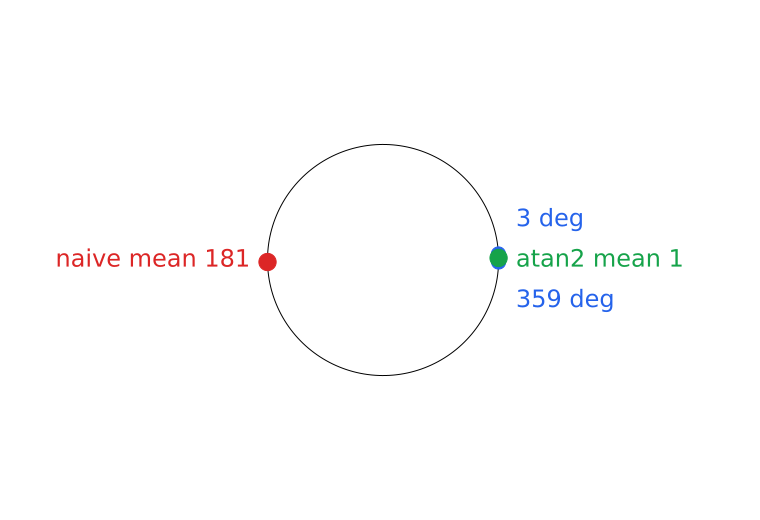
state_mean and z_mean
- 가중치 Wm 으로 sin, cos 의 가중합을 구해 atan2 로 각도 평균, 위치와 거리는 일반 가중 평균
- 각도 179 도와 -179 도인 두 점의 평균, 단순 가중합은 0 도, state_mean 은 180 도로 올바른 값
- 조건: 두 점, 가중치 (0.5, 0.5), NumPy 삼각함수와 dot 이 배열 단위로 동작해 반복문보다 빠름
def state_mean(sigmas, Wm): x = np.zeros(3) sum_sin = np.sum(np.dot(np.sin(sigmas[:, 2]), Wm)) sum_cos = np.sum(np.dot(np.cos(sigmas[:, 2]), Wm)) x[0] = np.sum(np.dot(sigmas[:, 0], Wm)) x[1] = np.sum(np.dot(sigmas[:, 1], Wm)) x[2] = atan2(sum_sin, sum_cos) return x def z_mean(sigmas, Wm): z_count = sigmas.shape[1] x = np.zeros(z_count) for z in range(0, z_count, 2): sum_sin = np.sum(np.dot(np.sin(sigmas[:, z+1]), Wm)) sum_cos = np.sum(np.dot(np.cos(sigmas[:, z+1]), Wm)) x[z] = np.sum(np.dot(sigmas[:,z], Wm)) x[z+1] = atan2(sum_sin, sum_cos) return x sigmas = np.array([[0., 0., np.radians(179)], [2., 2., np.radians(-179)]]) print('naive: ', np.degrees(np.dot([.5, .5], sigmas)[2])) print('state_mean:', np.degrees(state_mean(sigmas, np.array([.5, .5]))[2]))
naive: 0.0
state_mean: 180.0
Building the Filter
- sigma point 와 UKF 에 residual, 평균 함수 전달, move() 와 Hx() 의 추가 인자는 keyword 로 전달
- 한 번의 predict(회색) 로 커진 6 sigma 타원이 update(녹색) 후 크게 줄어듦
- 조건: x = (2, 6, 0.3), P = diag(0.1, 0.1, 0.05), Q = 0.0001 I, alpha 0.00001, 잡음 없는 측정
def make_ukf(landmarks, sigma_range, sigma_bearing): points = MerweScaledSigmaPoints(n=3, alpha=.00001, beta=2, kappa=0, subtract=residual_x) ukf = UKF(dim_x=3, dim_z=2*len(landmarks), fx=move, hx=Hx, dt=dt, points=points, x_mean_fn=state_mean, z_mean_fn=z_mean, residual_x=residual_x, residual_z=residual_h) ukf.x = np.array([2, 6, .3]) ukf.P = np.diag([.1, .1, .05]) ukf.R = np.diag([sigma_range**2, sigma_bearing**2]*len(landmarks)) ukf.Q = np.eye(3)*0.0001 return ukf dt, wheelbase, u = 1.0, 0.5, [1.1, .01] landmarks = np.array([[5, 10], [10, 5], [15, 15]]) ukf = make_ukf(landmarks, sigma_range=0.3, sigma_bearing=0.1) ukf.predict(u=u, wheelbase=wheelbase) plot_covariance_ellipse(ukf.x[:2], ukf.P[:2, :2], std=6, facecolor='k', alpha=0.3) z = Hx(move(np.array([2, 6, .3]), dt, u, wheelbase), landmarks) ukf.update(z, landmarks=landmarks) plot_covariance_ellipse(ukf.x[:2], ukf.P[:2, :2], std=6, facecolor='g', alpha=0.8)
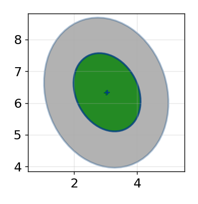
UKF Robot Localization
- 시뮬레이션은 dt/step 간격으로 10 배 촘촘히, UKF 는 step 번마다 한 번, 측정은 sense() 로 생성
- 회색은 prior, 녹색은 posterior 의 6 sigma 타원, 측정 후 불확실성이 매우 작음
- 조건: landmark 3 개, 명령 (1.1 m/s, 0.01 rad) 200 회, 거리 σ 0.3 m, bearing σ 0.1 rad, dt 1 s
def run_localization(cmds, landmarks, sigma_range, sigma_bearing, ellipse_step=1, step=10): ukf = make_ukf(landmarks, sigma_range, sigma_bearing) sim_pos, track = ukf.x.copy(), [] for i, u in enumerate(cmds): sim_pos = move(sim_pos, dt/step, u, wheelbase) track.append(sim_pos) if i % step == 0: ukf.predict(u=u, wheelbase=wheelbase) if i % ellipse_step == 0: plot_covariance_ellipse(ukf.x[:2], ukf.P[:2, :2], std=6, facecolor='k', alpha=0.3) ukf.update(sense(sim_pos, landmarks, sigma_range, sigma_bearing), landmarks=landmarks) if i % ellipse_step == 0: plot_covariance_ellipse(ukf.x[:2], ukf.P[:2, :2], std=6, facecolor='g', alpha=0.8) track = np.array(track) plt.plot(track[:, 0], track[:, 1], color='k', lw=2) plt.scatter(landmarks[:, 0], landmarks[:, 1], marker='s', s=60) return ukf ukf = run_localization([np.array([1.1, .01])] * 200, landmarks, sigma_range=0.3, sigma_bearing=0.1) print('Final P:', ukf.P.diagonal())
Final P: [0.0092 0.0188 0.0007]
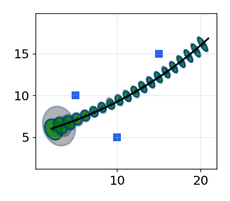
Design Process
- 설계 순서: 미리 정한 landmark 로 기본 UKF 를 먼저 동작시키고 질문을 하나씩 해결
- 질문 1: 다른 landmark 가 보이면? 측정 함수가 landmark 배열을 받도록 변경
- 질문 2: 각도의 residual 은? 각도 정규화 함수 작성
- 질문 3: 각도들의 평균은? 원형 평균 구현
- 시뮬레이션 10 Hz: Runge Kutta 없이 운동 방정식을 적분하므로 작은 시간 간격으로 정확도 확보
- UKF 1 Hz: 임베디드 시스템의 제한된 계산 능력, 필요한 만큼만 필터 실행
핵심: 처음부터 완벽한 설계는 없음, 할 수 있는 부분을 만들고 질문을 하나씩 해결
Steering Commands
- 속도와 조향각이 변하지 않는 앞의 시뮬레이션은 비현실적, linspace 로 변하는 조향 명령 생성
- 정지에서 가속 후 직진, 좌회전, 우회전, 다시 좌회전하는 명령 시퀀스를 그래프로 확인
- 조건: turn(v, t0, t1, steps) 는 조향각을 t0 에서 t1 도까지 steps 단계로 변화, 최대 속도 1.1 m/s
def turn(v, t0, t1, steps): return [[v, a] for a in np.linspace(np.radians(t0), np.radians(t1), steps)] # accelerate from a stop cmds = [[v, .0] for v in np.linspace(0.001, 1.1, 30)] cmds.extend([cmds[-1]]*50) # turn left v = cmds[-1][0] cmds.extend(turn(v, 0, 2, 15)) cmds.extend([cmds[-1]]*100) #turn right cmds.extend(turn(v, 2, -2, 15)) cmds.extend([cmds[-1]]*200) cmds.extend(turn(v, -2, 0, 15)) cmds.extend([cmds[-1]]*150) cmds.extend(turn(v, 0, 1, 25)) cmds.extend([cmds[-1]]*100) cmds = np.array(cmds) ax1 = plt.subplot(211); plt.plot(cmds[:, 0]); plt.title('v (m/s)') plt.subplot(212, sharex=ax1); plt.plot(np.degrees(cmds[:, 1])) plt.title('steering (deg)'); plt.xlabel('step');
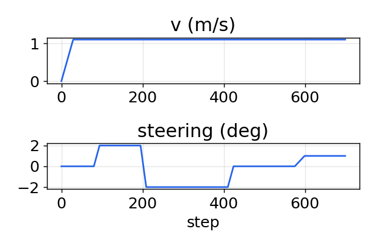
Steering the Robot
- 더 멀리 이동하므로 landmark 를 7 개로 늘리고 dt 0.1 s 마다 UKF 실행
- 불확실성이 매우 빠르게 작아져 6 sigma 타원조차 거의 보이지 않음
- 조건: landmark 7 개, 명령 700 회, step 1, 타원은 20 단계마다, 거리 σ 0.3 m, bearing σ 0.1 rad
landmarks = np.array([[5, 10], [10, 5], [15, 15], [20, 5], [0, 30], [50, 30], [40, 10]]) dt, wheelbase = 0.1, 0.5 ukf = run_localization(cmds, landmarks, sigma_range=0.3, sigma_bearing=0.1, step=1, ellipse_step=20) print('final covariance', ukf.P.diagonal())
final covariance [0.0013 0.0043 0.0004]
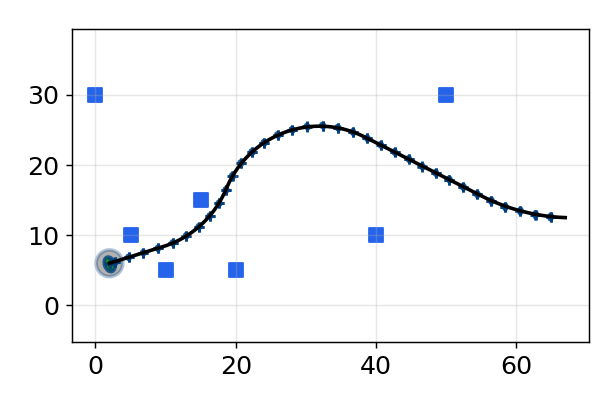
Two Landmarks
- 출발점 근처의 landmark 2 개만 제공해 오차를 키운 실험
- 로봇이 landmark 에서 멀어질수록 타원이 커지고 최종 공분산, 특히 y 분산이 증가
- 조건: landmarks[0:2] = (5, 10), (10, 5), 나머지 조건 동일
landmarks = np.array([[5, 10], [10, 5], [15, 15], [20, 5], [0, 30], [50, 30], [40, 10]]) dt, wheelbase = 0.1, 0.5 ukf = run_localization(cmds, landmarks[0:2], sigma_range=0.3, sigma_bearing=0.1, step=1, ellipse_step=20) print('final covariance', ukf.P.diagonal())
final covariance [0.0026 0.0656 0.0008]
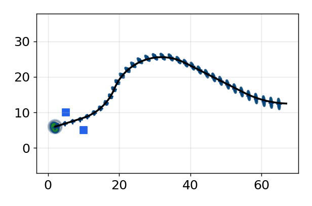
Discussion
UKF
- 2n + 1 개 sigma point 와 f(x), h(x) 함수 작성
- 각도의 모듈러 연산 처리가 번거로운 부분
- 개념이 단순, 여러 점을 표본해 강한 비선형에서 정확
EKF
- 한 점에서 선형화해 선형 Kalman filter 에 통과
- 꽤 어려운 수학, 닫힌 해가 없으면 반복 해법
- UKF 가 최소한 비슷하고 보통 더 좋은 성능
- 권장: UKF 부터 구현, 발산 시 큰 피해가 나는 시스템은 정교한 분석과 실험으로 필터 선택
- 사용한 UKF: scaled unscented filter 를 Van der Merwe 방식으로 파라미터화한 형태
- sigma point filter 계열: 점을 고르고 가중하는 방식이 다른 여러 필터, SVD 를 쓰는 필터 등 다양
결론: UKF 는 sigma point filter 의 한 형태, 비선형 위치인식 문제의 실용적인 출발점